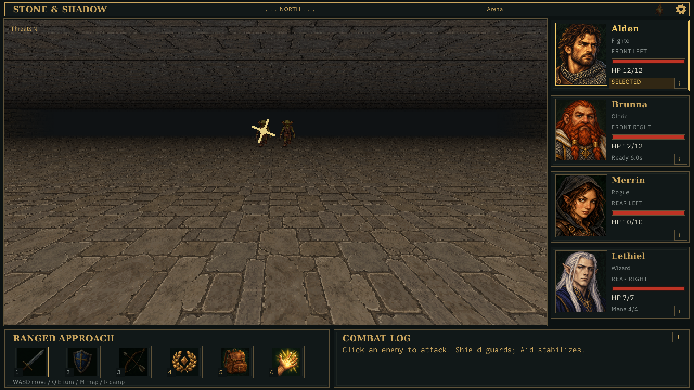
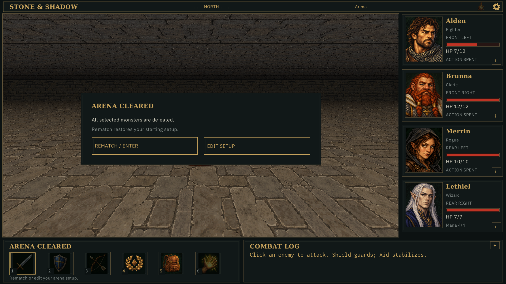
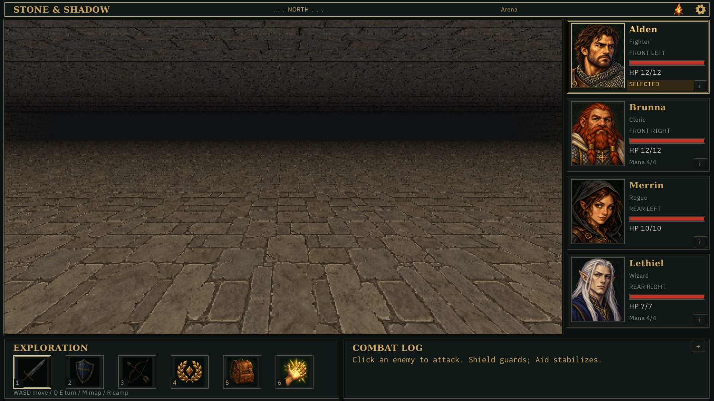
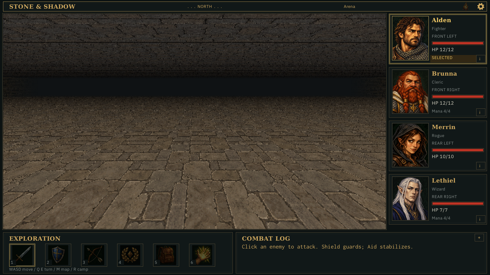
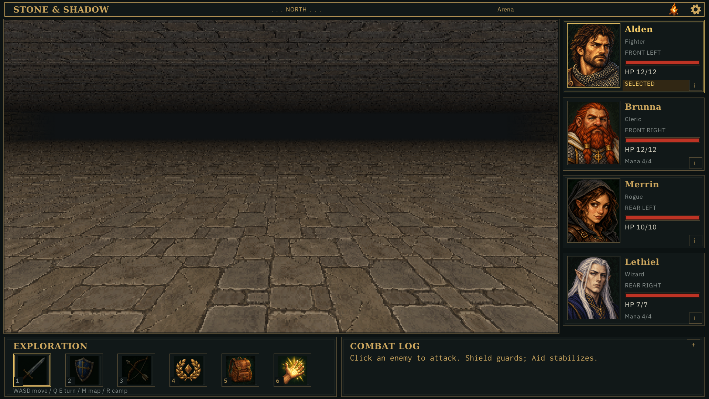
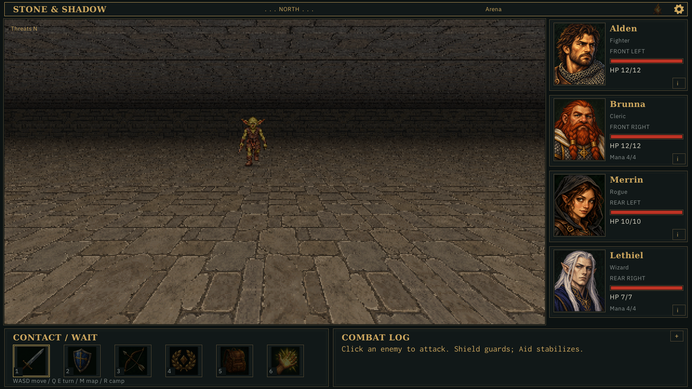

diagnostic: operation 1, tick 0

Accepted by the user after gallery review on 2026-10-30. Application-owned hidden captures through MCP and strict replay. Current scene/HUD, without historical UI interactions. No OS input or focus control. Verification and limitations





